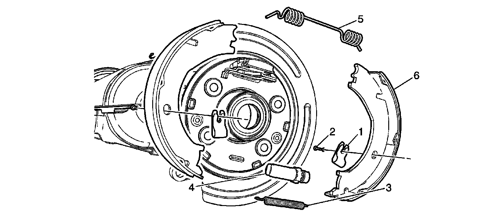
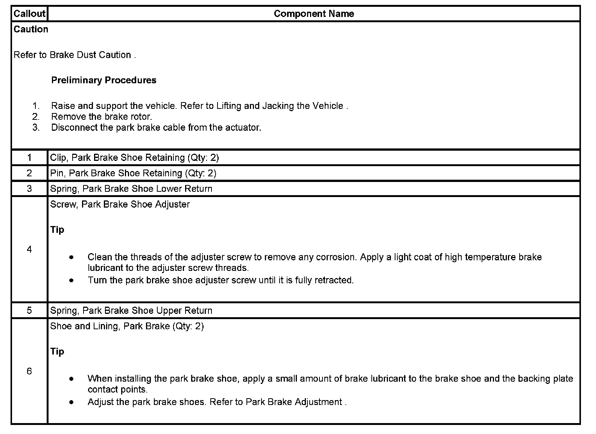

Operation CHARM
: Car repair manuals for everyone.
Home
>>
Cadillac
>>
2007
>>
Escalade ESV AWD V8-6.2L
>>
Repair and Diagnosis
>>
Brakes and Traction Control
>>
Parking Brake System
>>
Parking Brake Shoe
>>
Service and Repair
>>
Park Brake Shoe Replacement (2500 Series)
Park Brake Shoe Replacement (2500 Series)
Park Brake Shoe Replacement (2500 Series)

